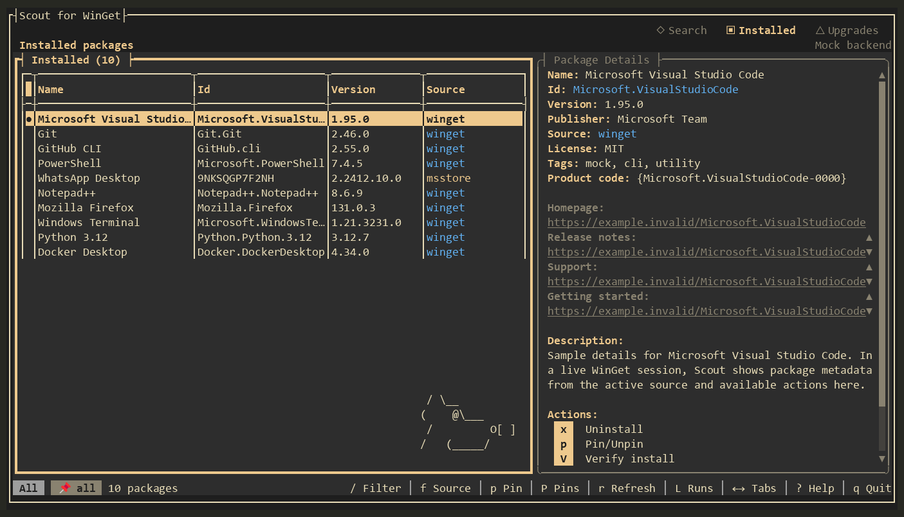

SCOUT FOR WINGET / DOCUMENTATION
Make yourself at home.
Install Scout, learn its daily workflow, and find the right package with confidence.
01 / INSTALL
Install Scout
Scout runs on Windows 10 or 11 with WinGet available through App Installer. Windows Terminal is recommended. Choose the portable ZIP that matches your PC:
- Extract the complete ZIP to a folder you will keep, such as
%LOCALAPPDATA%\Programs\WinGetScout. - Open Windows Terminal or PowerShell in that folder.
- Run
.\wingetscout.exe.
The community WinGet package ID is Harder.WinGetScout. When its submission is accepted, winget install -e --id Harder.WinGetScout will place the portable package in WinGet's managed directory and add its command to your user PATH. The package is not yet available in the community source.
Downloads are currently unsigned. Check the release's SHA256SUMS file before running a download. See the signing status and plan.
02 / DAILY WORKFLOW
Find your way around
Scout opens on Installed packages. Use the left and right arrow keys to switch between Search, Installed, and Upgrades. The package list and detail panel stay side by side, so you can compare results without retyping a package ID in another command.

Installed view · Amber theme · demo data- Search for a package and move through the results. Its publisher, source, version, links, and description stay visible beside the list.
- Press
ifor a single install, or select several results withSpaceand pressBto inspect an install plan first. - On Upgrades, select the packages you want and press
Uto review and upgrade them together. - Use pins when a package should stay put, saved sets for repeatable lists, and recent runs to see what succeeded or failed.
For everyday interactive work, Scout keeps these steps in one place. The winget CLI remains available for commands and scripts.
03 / SHORTCUTS
Keyboard shortcuts
Scout also supports mouse input. The status bar shows actions available in the current view; press ? for the complete in-app help.
04 / THEMES
Choose a palette
Press t to switch between Sage, Amber, Moss & Olive, and Dusty Rose without leaving Scout. You can also start with --theme=sage, --theme=amber, --theme=moss, or --theme=rose. See all four theme screenshots, captured with demo packages.
05 / STAY CURRENT
Scheduled update checks
On the Upgrades tab, press C to check now or set a daily local time. Scout creates a current-user Windows Task Scheduler task. The first successful check establishes a baseline; later checks can notify you about new or changed unpinned upgrades or a failed check.
Scout keeps package sets, recent runs, update-check results, and schedule settings under %LOCALAPPDATA%\WinGetScout.
06 / UNDER THE HOOD
Backends and capabilities
The complete portable ZIP uses the structured WinGet COM API where it can activate. If COM is unavailable, Scout falls back to the winget CLI and shows the active backend in its header. The standalone EXE download uses the CLI because it lacks the COM companion files.
Both backends support core search, install, upgrade, uninstall, pins, saved sets, history, and scheduled checks. COM can provide richer details, installer previews, version lists, live progress, and supported verify or repair actions. Some information depends on what the active backend exposes.
07 / HELP
Troubleshooting
WinGet is missing
Run winget --version. If the command is unavailable, install or update Microsoft App Installer, then open a new terminal.
Windows warns about an unsigned download
Confirm the file came from the project's GitHub Release and compare its SHA-256 hash with the matching SHA256SUMS file. See the signing guide for the current status.
COM is unavailable
Make sure you extracted the whole ZIP, then check the active backend shown in Scout. CLI fallback still supports the core workflows. See COM activation details.
How do I get help or report a bug?
Press ? in Scout or open a GitHub issue.
08 / MORE
More resources
Read the README for contributor and build instructions, the known limitations, and the release notes.
Scout was inspired by Scott Hanselman's winget-tui and is built with Terminal.Gui. It is an independent MIT-licensed project.